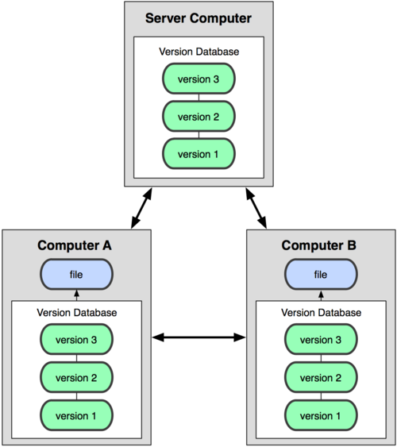
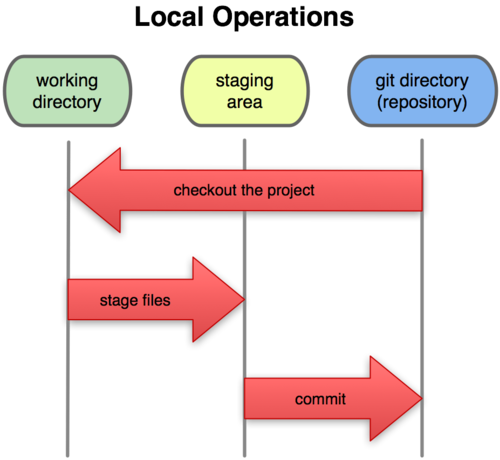
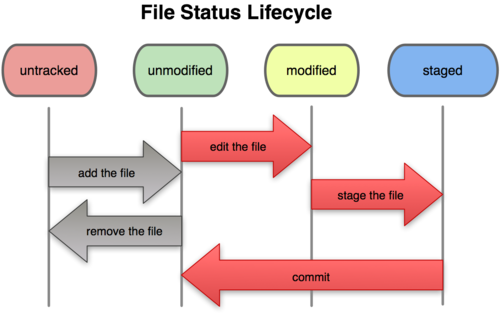
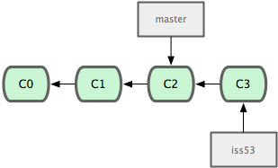
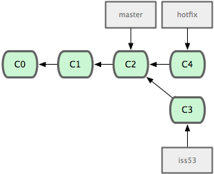
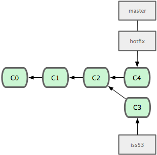
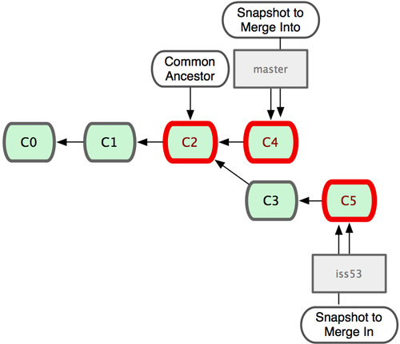
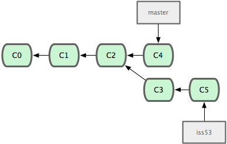
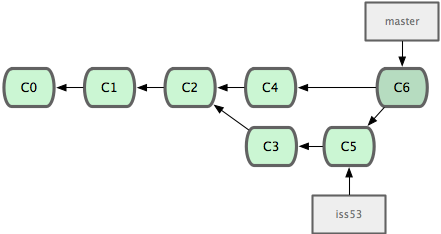

Git
The Stupid Content Tracker
Tyler Veness
What is Git?
- Version Control System (VCS)
- Records changes to files
- Provides a backup plan
- Used by major companies and more
 |
 |
Types of VCSs: Centralized

Types of VCSs: Distributed

How Git Stores Data
- Snapshots instead of diffs


Installation
User Configuration
git config --global user.name "John
Doe"git config --global user.email "johndoe@example.com"
Workflow
What you need to know to get things done
Cloning a Repository
git clone
git://github.com/schacon/grit.gitgit clone git://github.com/schacon/grit.git mygrit
- Three protocols
- git://
- ssh://
- https://
Making a Repository
git initgit init --bare- Creates .git folder in current directory
Staging Area

Staging Area

git add |
git add |
git rm --cached |
git commit [-m "message"] |
git status |
git diff [--staged] |
Staging Area
- How to keep files out of staging area?
- .gitignore file
# a comment this is ignored
*.a # no .a files
!lib.a # but do track lib.a
/TODO # only ignore the root TODO file, not subdir/TODO
build/ # ignore all files in the build/ directory
doc/*.txt # ignore doc/notes.txt, but not doc/server/arch.txt
Viewing History and Changes (Diffs)
git log [-#] [-p]
[--stat]git diff [<commit>] [--stat]git diff <commit> <commit>ex: git diff HEAD~2 HEAD
ex: git diff HEAD^
Exchanging Changes with Others
- "Push" changes out
git push [<local branch>]
ex:git push origin master - "Pull" changes in (fetch + merge)
git pull [<remote branch>]
ex:git pull origin/master - "origin" is a remote
Creating a Branch
git branch testing

Creating a Branch
git branch testing

Checking Out Branches
git checkout testing

Checking Out Branches
git checkout testing

Branch Example
git branch iss53git commit

Branch Example
git branch iss53git commit

Branch Example
git checkout mastergit checkout -b hotfixgit commit

Branch Example
git checkout mastergit checkout -b hotfixgit commit

Branch Example
git checkout mastergit merge hotfix

Branch Example
git checkout mastergit merge hotfix

Branch Example
git branch -d hotfixgit checkout iss53git commit

Branch Example
git branch -d hotfixgit checkout iss53git commit

Branch Example - Merge

Branch Example - Merge
git checkout mastergit merge iss53

Branch Example - Merge
git checkout mastergit merge iss53

Merge Conflicts
- Find
<<<<,----, and>>>> - Commit result
Extra Resources
- Windows:
git <command> --help - Linux:
man git-<command> - https://git-scm.com/doc/
- https://git-scm.com/book/